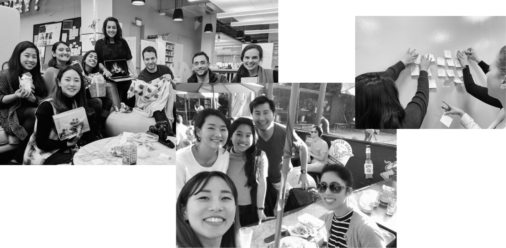

Verily (formerly Google Life Sciences)
Duration: 2018-Present
My Role: UI/UX Designer
Lives at the intersection of technology, data science and healthcare.

About
Verily, an Alphabetopen_in_new company, lives at the intersection of technology, data science and healthcare. We are developing tools to collect and organize health data, then creating interventions and platforms that put insights derived from that health data to use for more holistic care management. We also collaborate with world-renowned organizations like Google, Sanofi, Pfizer, Walgreen, etc. to create a significant impact on human health.
During my time at Verily, I have worked on various portfolio on healthcare platforms, from instructional manuals for hardware devices to software solutions for patients, health coaches, and clinicians. As a user advocate, I am responsible to define and design accessible and enjoyable interfaces across multiple device families in a fast-paced, startup-like environment. I work closely with other UX owners, product managers, engineers and marketing to successfully go from early stage concepts to launch.
Key Takeaways
Each person has valuable knowledge to offer
I would always learn from talking to people, even from other teams or specializations. I have worked with the user researcher and learned how to ask better questions. I have also learned from the product team how to design around constraints because not all situations are ideal. Each person plays an essential role and has a bundle of knowledge to offer, so it's important to always be curious and ask questions.
Think systematically
I have been lucky to be a part of the team when we currently aim to build our UX design language across all Verily products. I should make sure a UI pattern I use is in line with other parts of Verily products, and a new UI pattern that I design can be reused and repurposed easily for other sections of our products. For instance, the Project Baseline enrollment pattern has been a go-to reference for other product teams such as Onduo and One Fifteen.
Make informed design decisions
Design choices must be backed up by reason. Every choice you make should be deliberate. Good UX design stems from empathizing with the user, so it is extremely important to do research. Use data and analytics to better understand the user. You should always have an answer to why you made a design choice.
Design for accessibility
Fundamentally, a great user experience is both useful and usable for all. When you design healthcare products, it’s incredibly important to start with an accurate picture of who I am designing for and what problems I am trying to solve. How familiar our users to health data? What are their I ask all these questions to create accessible experience.
Be Ready to Pivot
During my time at Verily, I’ve worked on various types of projects for different user needs. Not only working on mature products that require deep thinking, I also worked on multiple short-term projects that are in early development. I learned to change my mindset for different business goals and user needs.
Shoutout to VUX!
A HUGE thank you to the most wonderful team I can ever ask for. I'm so very lucky to work with such amazing UX talents at Verily.
Any Question?
If you have any question about my experience at Verily, feel free to email me at hi@minjoodesign.com!